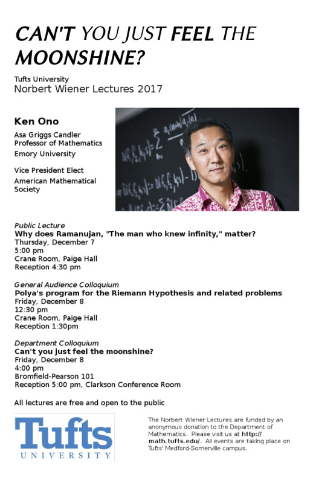

Ken Ono (Asa Griggs Candler Professor, Department of Math and CS, Emory University) gave the Wiener Lectures in the Tufts University Math Department in December 2017.
Polya’s program for the Riemann Hypothesis and related problems
- Why does Ramanujan, The man who knew infinity, matter?
- Polya’s program for the Riemann Hypothesis and related problems
- Can’t you just feel the moonshine?
